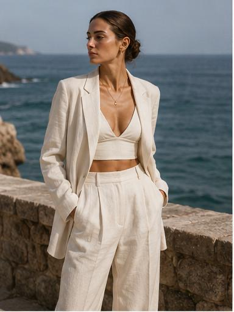
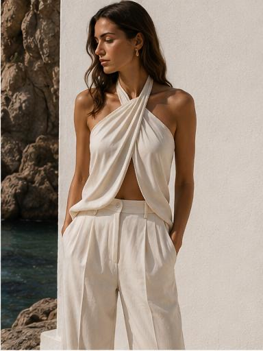
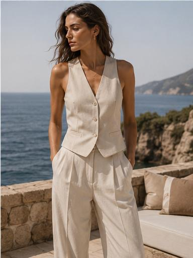
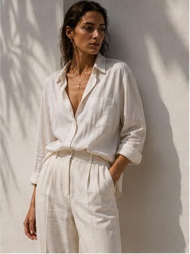
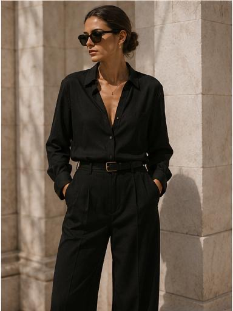
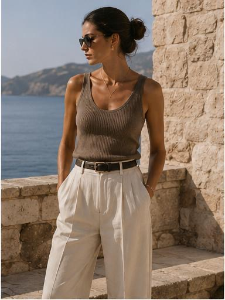
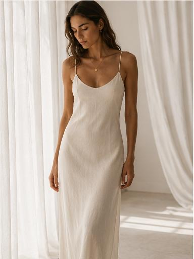
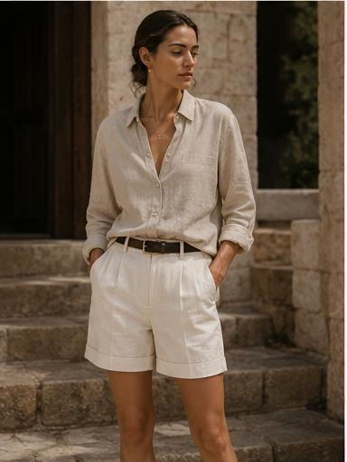
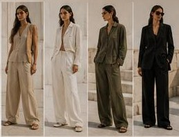
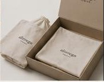

Women
Capri Attitude
La capsule donna di alteregø: undici pezzi pensati per stare insieme, e per reggere anche da soli. Lino, seta, satin, maglia. Nessun capo che chieda di essere abbinato.
- 11 pezzi
- 4 look
- 7 materiali
- 6 colori


Manifesto
Ogni donna ha più di una versione di sé. Noi progettiamo per ogni sua versione.

Una capsule si giudica da quanto resta, non da quanto arriva.
Linee pulite, tessuti nobili, dettagli invisibili. Una camicia di lino che si sgualcisce come deve, una maglia a costine che aderisce senza stringere. alteregø è eleganza senza sforzo.
Capri Attitude non è un guardaroba da vacanza: è il modo in cui una vacanza ti cambia il passo. Vita alta, volumi puliti, niente di superfluo. Undici pezzi che si combinano tra loro in ogni ordine — perché nessuna versione di te ha bisogno di un capo diverso ogni mattina.
La capsule
Nessuno di troppo.
Un indice, non un catalogo. Ogni voce è un capo che esiste per una ragione precisa e che sta in piedi anche da solo.
- 01 Essential Tank
- 02 Linen Shirt
- 03 Open Collar Shirt
- 04 Knit Top
- 05 Wide Pant
- 06 Satin Skirt
- 07 Slip Dress
- 08 Relaxed Blazer
- 09 Linen Jumpsuit
- 10 Leather Tote
- 11 Gold Necklace
Nove capi, una borsa, un gioiello. I nomi restano in inglese, come nel brand book. La numerazione qui è consecutiva: nel brand book il 09 resta vuoto.




I look
Come si combinano.
Non quattro outfit da copiare: quattro temperature di colore, dal giorno alla sera.


Look 01
Sand Tones
Sabbia su sabbia, con un mezzo tono di scarto. Lino chiaro, pantalone ampio, e la pelle a scaldare. È il look che regge dieci ore di luce senza cambiare espressione.
Look 02
Total Cream
Un solo colore dalla testa ai piedi. Quando il colore sparisce restano i volumi: la lunghezza di una camicia, la caduta di una gonna, il vuoto tra un pezzo e l'altro.
Look 03
Olive Touch
Un accento verde oliva dentro una base di neutri. Un solo pezzo colorato, mai due: il resto rimane cream e taupe e lascia che sia l'oliva a parlare.
Look 04
Night Elegance
Navy e nero, satin e seta. La sera della capsule: gli stessi pezzi del giorno, un tessuto che riflette e un gioiello dorato come unica luce.
Materiali
Sette tessuti,
una sola direzione.
- Linen
- Lino. La camicia e la jumpsuit: due pezzi su undici.
- Silk
- Seta. Peso quasi nullo, luce naturale.
- Cotton poplin
- Poplin di cotone. Mano fresca, colore pieno.
- Rib knit
- Maglia a costine. Un pezzo: il Knit Top.
- Viscose
- Viscosa. Volumi fluidi, caduta morbida.
- Satin
- Solo per la gonna. Prende la luce, non la rimanda.
- Leather
- Pelle. Il tote: il pezzo più duro di una capsule tutta morbida.
- Ricami tono su tono
- Vestibilità pulita e alta in vita

Palette
Neutri,
più un verde.
Cinque colori che stanno bene tra loro in qualsiasi ordine, e un oliva che compare in un look solo.
Cream
Sabbia
Taupe
Olive
Navy
Nero
L'oliva della linea donna non ha un riferimento esadecimale nel brand book: quello che vedi qui è un'approssimazione fedele al tono, non il colore definitivo del capo.
Capri Attitude
One woman, many identities.
One brand, limitless expressions.